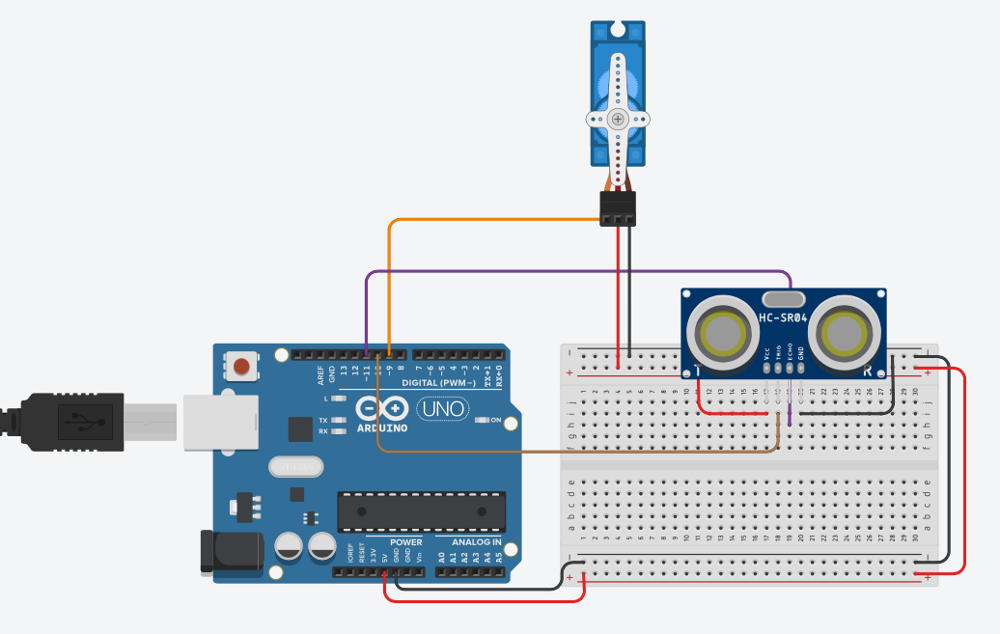

In the last blog, we learned about microcontrollers and had an introduction to sensors. We even learned how to blink an LED. However, a microcontroller has a RAM, processor, secondary storages, and what not! It must be able to perform much more complex tasks in comparison to just blinking an LED. So today, we will be creating a more sophisticated yet exciting project, something which is more relevant than ever. We will be creating an automatic sanitizer dispenser! The system will have a sensor that will dispense the liquid if it detects any obstacle (the hand) up to a distance of 10cm.
Let’s first cover what ultrasonic sensors and servos are:
An ultrasonic sensor looks like this.
Ultrasonic sensors work by emitting sound waves at a frequency too high for humans to hear. Then, they wait for the sound to be reflected back and give back the time taken for the process, using which we can calculate the distance. This is similar to how a radar measures the time it takes for a radio wave to return after hitting an object.
The two circular devices in the sensor are a transmitter and a receiver.
The transmitter emits a wave of eight pulses, and simultaneously the echo pin becomes high.
As soon as the detector receives the bounced waves after collision from an object,
the echo pin turns low, and pulseIn function calculates the time (in milliseconds)
for which the echo pin was high. Now, we calculate the distance by using our trustworthy formula,
distance = speed * time.
This is what a Servo motor looks like:
Unlike regular motors, these motors have 3 pins - a SIGNAL pin, in addition to the usual POWER and GROUND pins. The advantage of using a servo motor is that we can precisely control its rotation angle and the servo maintains this angle, even if we try to manipulate it by applying external torque. Arduino can control the angular position of the servo by sending it a specific time-coded PWM signal to the motor's SIGNAL pin. Fortunately, we don’t have to worry about the exact details, since the “Servo.h” library in the Arduino IDE takes care of all that. For more detail on how it works, click here.
Let’s try the sweep code which comes as an example program along with the servo.h library:
Phew! Quite a few things to process, right? Let’s get back to our project now.
Now that we know all the required hardware is working, we just connect them as shown in the image.
Upload the following code to the Arduino in order to tell it what it is supposed to do and when.
We are all set now. All that is left is to set things in the right place as in the picture shown below.
Here, the servo is attached above the dispenser. However, you may use any mechanism that you feel good about. Another possibility could be the following:
Note: You might be tempted to connect the hardware before the wiring and coding part. But this isn’t advisable as there may be some faulty components. First, start with the materials required for your project. Then, complete the coding and electrical parts. In the end, assemble and complete your project.
Click here for a Tinkercad link to the project.
You can simulate the project here. Click on 'Start Simulation' and then select the ultrasonic sensor to vary the distance of obstruction.
Thanks for making it this far.
Sayonara.
Subscribe below to receive emails about more such awesome articles